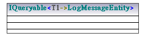

Class
IQueryable<T1->LogMessageEntity>
diagram

owner
LogManagement
template
IQueryable
templ.par.substitution
formal
actual
T1
LogMessageEntity
properties
visibility
public
leaf
false
abstract
false
isFinalSpecialization
false
active
false
«struct»
false
«delegate»
false
«attributes»
false
«internal»
false
«new»
false
«static»
false
«unsafe»
false
«partial»
false
associations to
from
to
Association name
LogMessageServiceContext
associations from
from
Association name
LogMessageServiceContext
typedElements
Class
LogMessageServiceContext
Operation
Accounts
shown on diagram
Content of LogManagement
Content of WorkerController and all subpackages
UML documentation generated by
UModel
UML Editor
http://www.altova.com/umodel
07/26/13 13:25:12